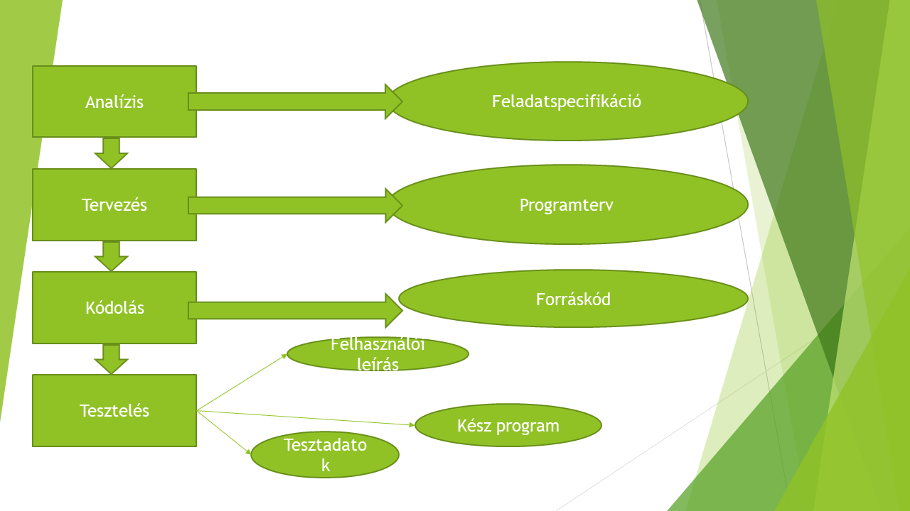

Szofter fejlesztés
Szofter fejlesztés lépései
- Analízis
- Tervezés
- Kódolás
- Tesztelés/karbantartás
Analízis
Az analízis során felmérjük a helyzetet: mire van szükség, mik a lehetőségek.
Itt kell dönteni, hogy a feladat megvalósítható-e, mik a célok, meg kell becsülni az időt, költségeket.
Feladat specifikáció
- teljes
- érthető
- egyértelmű
- pontos
- tömör
- szemléltetés
- előrelátó
- jól felépített,tagolt
A beviteli(input) adatok
- mik az input adatok?
- Milyen a beviteli formájuk?
- Mik a bevihető értékek?
- Miley módon kell befejzni a bevitelt?
- Milyen kapcsolatok vannak a beivftt adatok között?(adatbázis kezelés)
A kviteli (output)adatok
- Milyen adatokat kell megőrizni?
- Milyen formában kell megőrizni?
- Mennyi adatról van szó?
- Mennyi adatot kell megjeleníteni?
Tervezés
A tervezés feladata az analízis során összegyűjtött információkat és adatokat alapul véve logikailag véglegesen kialakítsa az adat struktúrámat és az adatokat manipuláló algoritmusokat
Tervezés módszer kiválasztása
- A számítás mely korszakát éljük?
- Mileyn számítógépre készül a program?
- Mekkora a megoldható feladat?
- Mileyn módszerek állnak rendelkezésre?
- Milyen a tervező csoport informáltsága?
- Van-e anyagi fedezet?
- Mik a tradíciók?
- Mi a főnöki utasítás?
A tervezés során a folyamatábra segítségével modellezzük a folyamatokat, algoritmusokat.
A tervezési folyamat dokumentációja a programterv. Ezt folyamatosan ellenőrizni, tesztelni kell az elképzelt adatokkal.
"Fejben lefuttatjuk" programot. Ezt nevezzük száraz tesztnek
Kódolás
Implementálás (kivitelezés)
Első lépés a programterv kódolása egy adott programnyelven.
A dokumentációja ennek a szakasznak a forrásprogram, illvetve a forrásnyelvi lista
Egy forrásnyelvi lista akkor jó ha az
- Pontosan a programterv szerint készül.
- Áttekinthető,olvsaható
- Tömör és egyértelmű megjegyzésekkel van Kiegészítve.
Szintakkal hibák javítása történik.
Tesztelés
Próbafutások alkalmával természetes, hogy hibát észlelünk
Szemantikai hiba logikai hibát észlelünk.
Tesztelés feladata:
- logika hibák feltárása
- Szélsőséges esetek feltárása és kezelése
Tesztelés folyamata
- különböző próba adatokkal futtajuk a programot
- a tesztadatokat úgy kell összeállítani hogy azok minden lehetséges éréket felvegyenek
Teszteléskor figyelni kell arra hogy
- Pontosan úgy működik-e a program, ahogy az a feladatleírásban szerepel?
- Nem lehet-e elrontani?
- Elég hatékony-e?
- Felhasználó barát-e?
- Teljes mértékben szolgálja-e a felhasználót?
- Szép-e a program?
- Sehol sem idegesítő?
Tesztelési fázis dokumentációja a kész program és a tesztadatok listája
Dokumentáció
Minden fázisnak megvan a maga terméke, dokumentációja. A program fejlesztésének befejeztével a teljes dokumentációt meg kell őrizni.
Csak így lehet a későbbiekben a programon változtatni.
A fejlesztői dokumentáció részei:
- Feladatspecifikáció
- Programterv
- Forrásprogram
- Kész program
- Tesztadatok listája
- Felhasználó kap a kész rendszerhez egy a program használatával kapcsolatos információkat tartalmazó dokumentációt.
Felhasználói dokumentáció részei:
- Feladat leírása
- Hardver környezet
- Számítógép típusa
- Minimális konfiguráció
- Szoftver környezet
- Futtatáshoz szükséges kiegészítő szoftverek
- Fejlesztési környezet, programozási nyelv
- Program betöltése, indítása
- A program használatának részletes leírása
- Billentyűk használata
- Működési leírás minden részletre kitérően
- Segítség kérés lehetőségei
- Képernyő tervek, lista tervek
- Hibaüzenetek felsorolása, útmutatás, teendők
- Biztonsági előírások (adatvesztés elkerülése)
